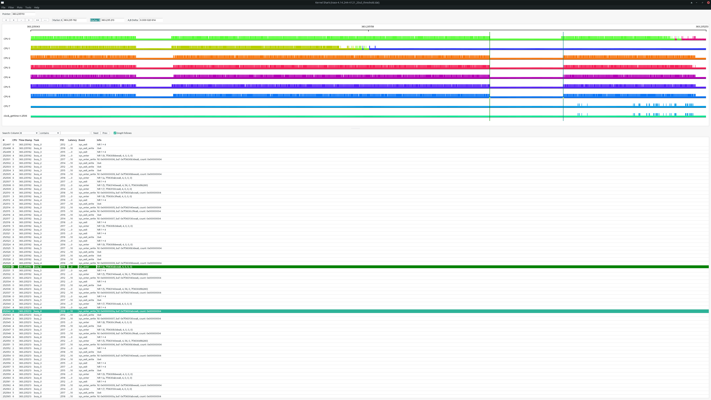

Tracing on NI Linux Real-Time¶
Introduction¶
When debugging latency issues, race conditions, or hangs on real-time embedded targets, it is useful to know what the kernel/OS was doing just prior to the error condition. Acquiring and analyzing a kernel event or function trace can provide insights into latency spikes, race conditions, lock contention, priority inversions, missed loop iterations and so on.
This document covers using the kernel ftrace system.
ftrace¶
On NILRT systems the kernel debugfs is mounted at /sys/kernel/debug. The ftrace subsystem can be controlled via pseudo-files at /sys/kernel/debug/tracing. For a quick description of the configuration knobs available, see /sys/kernel/debug/tracing/README.
Below is the typical sequence to start an event trace from an SSH/serial terminal prompt. The same operations can be performed via file read/writes from other programming languages, including LabVIEW.
Note
Files under /sys/kernel/debug/tracing are text files, use appropriate LabVIEW primitives when accessing them.
Note
Tracing is a privileged operation. On older versions of NILRT (2025Q1 and earlier), file ownership and/or permissions have to be adjusted when used from LabVIEW; e.g., with chown -R lvuser:ni /sys/kernel/debug/tracing. This change will not persist across a reboot.
Stop any ongoing tracing and clear the buffer.
echo 0 > /sys/kernel/debug/tracing/tracing_on echo 0 > /sys/kernel/debug/tracing/trace
Enable tracing for all events.
echo 1 > /sys/kernel/debug/tracing/events/enable
Start tracing.
echo 1 > /sys/kernel/debug/tracing/tracing_on
(optional) Add custom markers to the trace.
Custom markers can be added into the trace to track the application progress by writing into the trace_marker file:
echo "something happened" > /sys/kernel/debug/tracing/trace_marker
Use this with caution and sparingly. Writing to the trace buffer adds additional latency.
Stop tracing.
Trace events are written to a circular buffer, so newer trace contents overwrite older trace contents. Stop tracing as soon as possible after the event of interest to ensure important trace information is not lost.
echo 0 > /sys/kernel/debug/tracing/tracing_on
Extract the trace¶
The resulting trace can be extracted to a binary file with trace-cmd which can be installed from packages feeds with
opkg install trace-cmd
To extract the trace to the default filename trace.dat, use
trace-cmd extract
Alternatively, the trace can instead be extracted in a human readable textual representation using the following command. Extracting the trace can be a slow operation if it is large.
cat /sys/kernel/debug/tracing/trace > trace.txt
Analyze the results¶
A resulting binary trace file can then be loaded in the front-end GUI tool Kernelshark for off-target analysis.

Kernelshark can be used on a Linux desktop distribution or on Windows using the Windows Subsystem for Linux (WSL).
Kernelshark using Windows Subsystem for Linux (WSL)¶
Kernelshark is a Linux application. You can run it on a native Linux desktop installation or a virtual machine installation. If you would like to run Kernelshark from within a Windows desktop environment, you can do so using the Windows Subsystem for Linux (WSL).
A complete guide to installing and using WSL is outside the scope of this document. However, the following steps show the general process to install and use Kernelshark. For more information, see the Microsoft documentation.
Install WSL
From Powershell or Command Prompt run in administrator mode:
wsl --install
This command installs the default Linux distribution. The remaining instructions assume Ubuntu, but the instructions are similar for other distributions.
Restart Windows
Launch Ubuntu
Ubuntu should now be present in your Windows start menu. Select it to launch Ubuntu. This will open a shell window. There will be a delay as Windows downloads and installs your Linux distribution. You will select a username and password for your account in the Linux distribution.
Install Kernelshark
In the shell window, run each of the following commands.
sudo apt update sudo apt install kernelshark
If you are using a different Linux distribution with a package manager other than
aptthe commands will be different.Launch Kernelshark
Kernelshark should now be present in your Windows start menu. Select it to launch Kernelshark.
Note
With some graphics hardware/driver configurations, Kernelshark might open with an empty black window. In this case, you can run Kernelshark with software rendering as a workaround. To do so, run the following command from the Linux shell.
LIBGL_ALWAYS_SOFTWARE=1 kernelshark
Copy the trace file
Use your preferred method to copy the trace file from your target to Windows or to your Linux distribution running in WSL. Common methods include scp, ssh, FTP, etc.
Open the trace file
Using the File menu in Kernelshark, choose to open a trace file. If the trace file is located on the Linux distribution running in WSL, then it should be found at the expected location. If the trace file is located on Windows, you can find it on the appropriate drive under the path
/mnt/<drive_letter>.
LabVIEW Threads¶
The trace will contain threads created by the LabVIEW Real-Time process (lvrt). The full list of these threads can be obtained by running
cat /proc/$(pidof lvrt)/task/*/status | grep Name
Some common threads are
Thread Name |
Description |
|---|---|
MainAppThread |
A thread that handles front panel communication. |
LV_Occurrence |
A thread that handles LV Occurances (e.g. software interrupts). |
LV_Socket_Mon |
A thread that handles socket (TCP and UDP) traffic. |
LV_Countdown |
A thread that controls scheduling of UI thread. |
LV_ESys2_Thr* |
Worker threads used to run parts of LabVIEW diagrams. |
Timed Loop |
A thread that handles timed loop whose name is user defined by Timed Loop’s Input Node Structure Name field. |